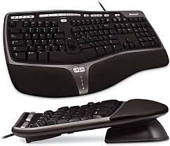
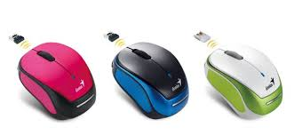
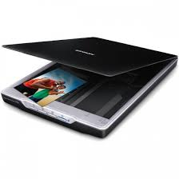
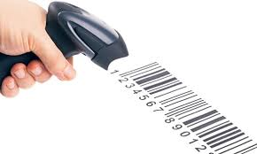
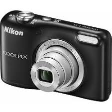

Ulazni uređaji računala su: tipkovnice miš skener čitač crtičnog koda digitalni fotoaparat web kamera mikrofon osjetilna ploha zason osjetljivna dodir grafička ploča

Tipkovnica (engl. keyboard) jedan je od najstarijih i najčešćih ulaznih uređaja računala. Posebno je pogodna i za sada gotovo nezamjenjiva za unos teksta. Tipkovnice koje olakšavaju rad i umanjuju umor pri dugotrajnom tipkanju nazivaju se ergonomske tipkovnice.povratak

Miš (engl. mouse) ulazni je pokazni uređaj, koji služi za pomicanje pokazivača po zaslonu monitora i davanje naredbi računalu pritiskom jedne od svojih tipki.povratak

Skener je ulazni uređaj namijenjen izravnom unosu slike s predloška u računalo. Zadatak mu je digitalizirati predložak, tj. pretvoriti ga u oblik prihvatljiv raunalu. Broj boja koje skener može prepoznati izražava se brojem bitova. Veći broj bitova znači da može zabilježiti veći broj različitih stanja a time i veći broj boja koje skener može razlikovati. Danas su u upotrebi stolni rotacijski i ručni skeneri.povratak

Jedan od važnih područja primjene računala je automatsko raspoznavanje objekata. Najčešće rabljena tehnologija automatskog raspoznavanja objekata je thnologija crtičnog koda. Objekti se u toj tehnologiji ozbilježavaju oznakama sačinjenim od niza debljih i tanjih tamnih crta na svijetloj podlozi.povratak

Digitalni fotoaparat umjesto na film sike sprema u digitalnom obliku na memorijske kartice. Sadržaj kartice se može brisati pa se na istu karticu mogu spremati nove slike. Unos slike u računalo je izravan i jednostavan, a unesena slika see naknadno može uređivati za to predviđenim programima.povratak
Web-kamera naziv je za malu kameru namijenjenu prijenosu pokretnih slika posredstvom računala i interneta. Najčešće je smještena pokraj računala i snima osobu koja radi za računalom. Mora cijelo vrijeme rada biti priključena na računalo, jer bez računalane može raditi.povratak
Mikrofon je ulazni uređaj koji omogućava unos zvuka u računalo. Prijenos se zvuka posredstvom interneta danas najčešće rabi u usluzi internetske telefonije. Glavna prednost takve komunikacije je praktično besplatno telefoniranje bez obzira na udaljenost.povratak
Kod prijenosnih računala miš je nepraktičan, posebice kada se računalo ne koristi na prikladnoj radnoj površini. Zbog toga je na prijenosna računala instalirana druga vrsta miša koja se naziva osjetilna ploha. Uz osjetilnu plohu nalaze se i dvije ili više tipki oje imaju istu funkciju kao tipke miša.povratak
Zaslon osjetljiv na dodir jest zaslon onitora koji ima sposobnost otkriti mjesto na kojemu je dodirnut. Zaslon je dovoljno dotaknuti prstom na željenom mjestu da bi se stvorili električni impulski koji odgovaraju položaju dodirnutog mjesta.povratak
Grafička ploča ulazni je uređaj koji omogućuje izravan unos crteža u računalo. Sastoji se od ploče i pokaznog uređaja u obliku miša ili olovke.povratak